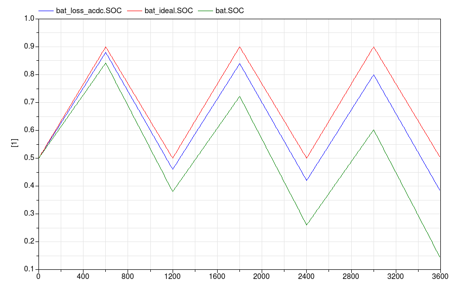

Package with example models
This package contains examples for the use of models that can be found in Buildings.Electrical.AC.OnePhase.Storage.
Extends from Modelica.Icons.ExamplesPackage (Icon for packages containing runnable examples).
| Name | Description |
|---|---|
| This example shows how to use the AC battery model |
 Buildings.Electrical.AC.OnePhase.Storage.Examples.AcBattery
Buildings.Electrical.AC.OnePhase.Storage.Examples.AcBattery
This example shows how to use the AC battery model

This example shows how to use an AC battery model.
The example compares three different batteries. The battery named
bat_ideal is ideal and it does not account for any losses.
The battery named bat_loss_acdc accounts for conversion losses when converting
between AC and DC.
The battery named bat accounts for both conversion losses and inefficiencies
during both the charge and discharge phases.
All the batteries start from the same initial condition, which is 50% of their total capacity.
The batteries are charged and discharged in the same way. The input signal pow.y
is the power that each battery should store or release. The signal has a duty cycle equal to 50%.
Therefore, if there are no losses the same amount of power stored into the battery will be
released and after one cycle the State of Charge (SOC) has to be equal.
The image below shows the SOC of the three batteries.

As expected the red line (ideal battery) maintains the SOC over the time. The other two batteries loose some of the initial energy due to the losses.
Extends from Modelica.Icons.Example (Icon for runnable examples).